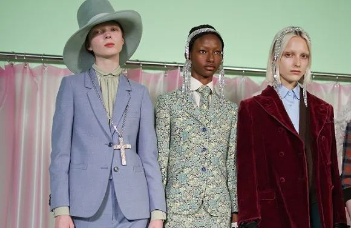

疫情肆虐，全球体坛按下最昂贵“暂停键”
原文链接 备份链接 2020年本可以成为国际体坛“最好的时代”。但随着新冠疫情在全球肆虐，国际体坛或将迎来“最坏的时代”。 近日，NBA、F1、欧洲杯、欧洲足坛五大联赛纷纷按下“暂停键”，全球瞩目的2020年东京奥运会或将面临“难产”。 …
 图片来源：图虫
图片来源：图虫
记者：黄姗 编辑：周卓然
“
由于奢侈品牌今年春夏季产品在中国市场已经逐步完成上市，其欧洲工厂的短期停摆对于中国市场当季的供货不会产生太大影响。
”
随着新冠肺炎疫情在欧洲大面积爆发，包括CHANEL、Hermès、Gucci在内的多家奢侈品世家纷纷被迫关闭自家位于欧洲的工厂。
当地时间18日，法国奢侈品牌CHANEL宣布，未来两周将关闭品牌在法国、意大利和瑞士三个国家的生产基地。这些被关闭的生产基地包含了CHANEL旗下手表、高级定制服装、成衣和高级珠宝等多类产品的生产线。

Chanel
而在意大利政府正式叫停意大利非关键性产业的一切商业活动直到4月3日后的第二天，Gucci也宣布关闭旗下六间位于意大利托斯卡尼和马尔凯地区的工厂，直至3月20日。不过按照意大利目前的情况来看，Gucci工厂的停摆时间或将延长。
而Hermès也在日前宣布暂时关闭法国境内42家工厂至3月底。

新冠疫情对于整个时尚行业产生巨大冲击。随着抗击新冠疫情的“战场”转移至欧美市场，奢侈品牌们在欧美市场的零售终端受到巨大冲击，其供应链上游也同时遭遇停摆。这不免令人担心，已经在中国恢复营业的奢侈品牌们，是否会出现产品断供的问题。
从目前情况来看，停产暂未影响到市场的现有供货。
Gucci品牌在12日的停产声明中写道：“重要业务活动将会继续，暂时关闭工厂将不会影响品牌向客户供应产品。”
一家位于上海核心商圈的Gucci门店也向界面时尚表示，该店至少能在一周之内通过全国调足50件同款包袋。
被问及欧洲工厂停产是否会影响备货，该营业员表示，目前店内当季新品的备货在短期内较为充足，如果某件单品缺货，也能通过国内调货来补足。

而Hermès的丝巾和包袋在中国奢侈品消费者当中向来有口皆碑。Hermès门店的一位销售对界面时尚表示，Hermès丝巾和皮具在中国市场的备货都有限。以Hermès的经典Clic12女士皮夹为例，单一店铺的存量有限，就算通过全国调货在一周内也较难配齐数十件。
目前，各大奢侈品牌都已经陆续在中国市场上新2020春夏系列产品，但通常同一系列中的不同单品其上市时间会有个先后时间差。
总体来看，由于奢侈品牌今年春夏季产品在中国市场已经逐步完成上市，其欧洲工厂的短期停摆对于中国市场当季的供货不会产生太大影响。
但欧美市场抗击新冠疫情何时结束目前还是个未知数，若抗击疫情还将持续较长一段时间，那么欧洲工厂的停摆可能会影响秋冬系列产品的生产与上新。
未经授权 禁止转载

原文链接 备份链接 2020年本可以成为国际体坛“最好的时代”。但随着新冠疫情在全球肆虐，国际体坛或将迎来“最坏的时代”。 近日，NBA、F1、欧洲杯、欧洲足坛五大联赛纷纷按下“暂停键”，全球瞩目的2020年东京奥运会或将面临“难产”。 …
原文链接 备份链接 体坛周报特约记者赵兴圣安东尼奥报道 一周前，雷霆和爵士的比赛开始前临时被叫停，现场解说宣布比赛延期并请球迷离场。 没过多久，爵士中锋戈贝尔被爆出确诊新冠病毒。随即，NBA宣布无限期停赛。 当时，马刺的主教练波波维奇正在 …
原文链接 备份链接 图片来源：视觉中国 记者：李亦萌 “ 截至目前，主流汽车制造商在欧洲的工厂关停率或接近半数。供应链所经受的考验令汽车制造商对全年收益的预期大幅降低，同时令当地投资者的信心被消磨。 ” 新冠肺炎疫情正在欧洲肆虐。世界卫生 …
原文链接 备份链接 体坛周报全媒体记者 季孟年 出生于1983年的后卫球员普尔·杰特已经在CBA效力多年，本赛季他是福建男篮的一员。就像其他的外援们一样，杰特在新冠疫情爆发之后选择回到了美国。如今，中国的疫情已经得到了有效的控制，CBA也 …
原文链接 备份链接 3月19日晚，央视《新闻1+1》连线中国红十字会志愿专家团队专家马学军。马学军介绍说，在伊朗有一个叫做“网络登记报告”的系统。“据了解，伊朗已经排查了2250万人，其中至少150万人有发热症状。也就是说，现在的伊朗疫 …